An Idea, Some Wireframes, and a Wide Open Problem.
The founder of Rolai came to us with a compelling premise: an AI-powered productivity platform for small businesses. The core proposition was three-layered — a chat interface for interacting with leading LLM models, a curated library of ready-to-use prompts for everyday business tasks, and a Knowledge Store that would act as context to make every response more accurate and relevant.
What made this engagement distinctive from the start was the honest uncertainty around it. We were designing for a broad audience in a space most users weren't yet familiar with. There was no validated playbook. The founder wasn't locked into a single user group, which meant we had to treat every feature decision as a hypothesis — and every client conversation as a research opportunity.
"With the average user not yet familiar with the capabilities of AI, our process centered on building a working prototype quickly — so people could see, not just imagine, what was possible."
Designed For Uncertainty
We began with foundational discovery, conducting competitor research and reviewing the existing work. The client had created a few initial wireframes, which gave us a clear understanding of the requirements and a solid starting point for the project.
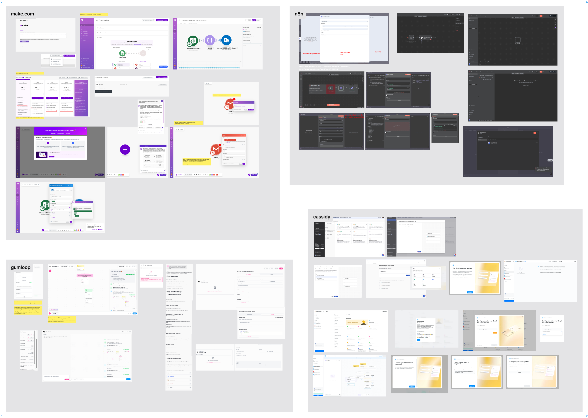
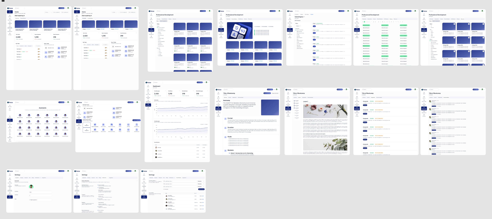
A traditional, structured design process wasn't the right fit for a product with this much ambiguity. Instead, we built a tight, adaptive loop — one that could turn a founder's client conversation into a live feature in days, not weeks.
"The goal wasn't to design the perfect product upfront. It was to get something real in front of real people as fast as possible — and let their reactions shape what came next."
Client Signal
Founder meets a prospect, identifies a need or friction point in their workflow.
Rapid Design & Dev
Build the feature in days. Move fast, stay functional, keep it demoable.
Review & Experiment
The team uses the feature internally while the founder demos it to prospects.
Iterate or Set Aside
Fix and adapt based on reaction. Polish what lands. Shelve what doesn't.
Core Features In One Coherent Experience.
The initial platform was built around four interconnected capabilities, each designed to make AI genuinely accessible and useful for small business users who had never thought of themselves as "AI users."
Chat
Direct access to leading LLM models through a clean, intuitive chat interface. Users could converse naturally, without needing to understand the technology underneath — just the results it could produce.
Prompt Library
A curated collection of ready-to-use prompts covering the most common day-to-day business tasks. Built for users who didn't know where to start, and powerful enough for those who did.
Knowledge
A contextual layer that gave the platform its accuracy advantage — users could upload their own materials and connect external sources so every AI response was grounded in their specific business reality.
Agents
As the platform matured, AI agents allowed users to delegate more complex, multi-step tasks — extending the core chat and prompt capabilities into more autonomous, reliable workflows.
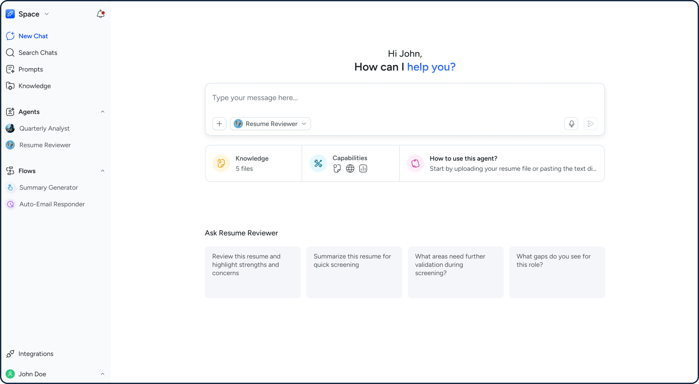
The chat landing page is your central space to interact, explore, and create. Here, you can seamlessly engage with the agents you've built as well as a range of available models. You can also use voice transcription, making conversations faster and more natural.
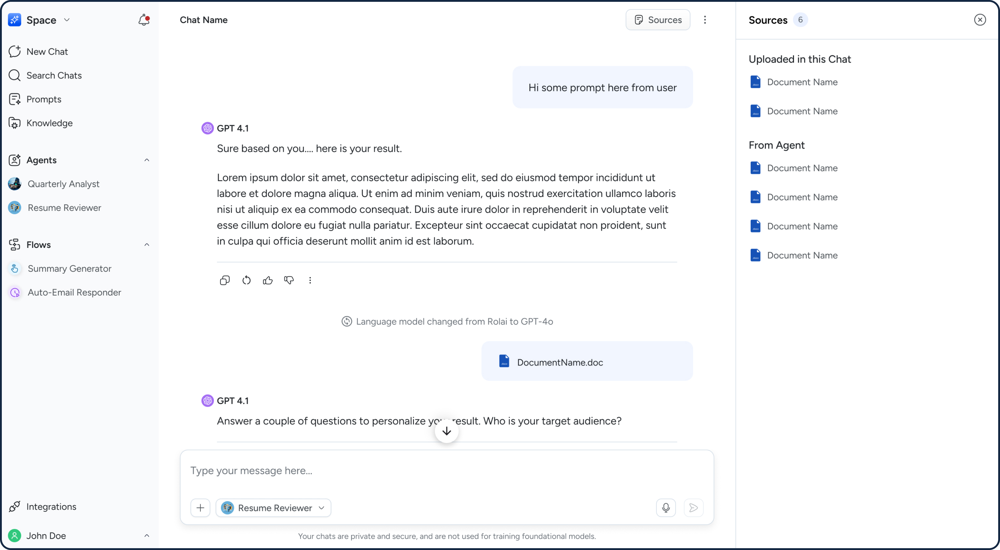
The chat conversation lets you view the sources behind each response, so you always know what information is informing your AI.
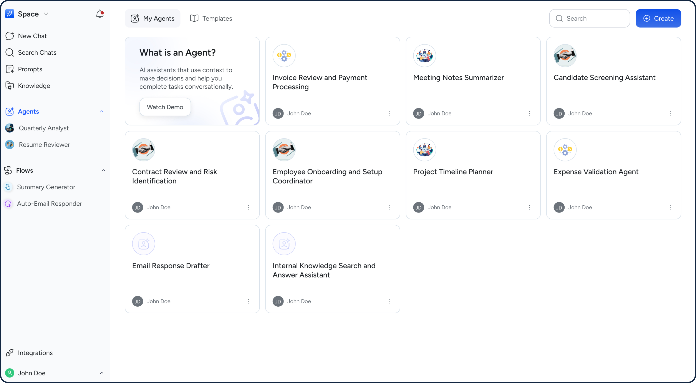
Agents are intelligent AI assistants you can create to handle specific tasks or workflows. You can star agents to make them easily accessible from the side panel, allowing you to quickly start a chat with your frequently used agents from anywhere in the product.
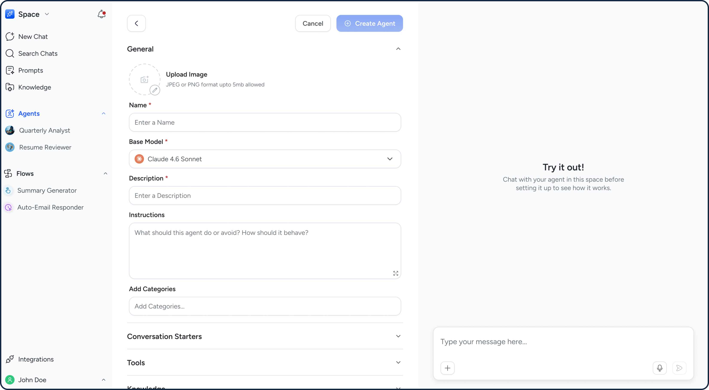
Agents use your instructions, connected apps, and added knowledge sources (like files and webpages) to generate responses and take action.
A Mortgage Client Changed Everything
The basic platform was working — but a new client engagement forced us to think at a different scale. A mortgage company came to us with needs that went far beyond chat and prompts. They needed to batch-process hundreds of PDFs, extract specific data fields, auto-fill forms, and operate through a custom interface built for their exact workflow. In response we built:
Custom Prompts
More elaborate than standard prompts, built to accept specific inputs and return structured outputs tailored to the client's process.
Flows V1
Chained prompts together so a multi-step task could be triggered and completed with a single click.
Knowledge Integrations
Connected the platform to external data sources like Google Drive and SharePoint, eliminating the friction of manual uploads.
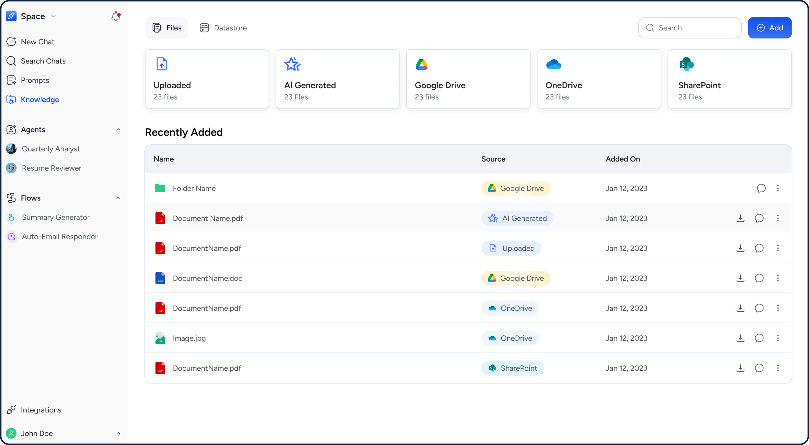
Knowledge lets users bring in content from multiple sources, enabling the AI to search and respond with richer, more relevant context.
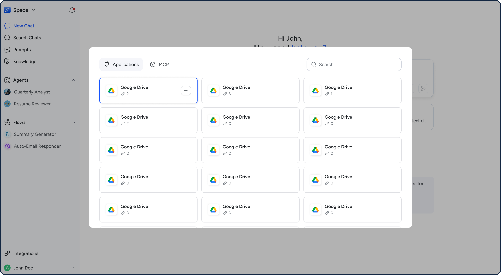
Users can connect multiple accounts across applications and MCP to automate common workflows seamlessly across touchpoints.
Two Turning Points That Changed Flows.
Flows started as a client-specific solution. Then we asked the harder question: what if every client could use them? That question — and a significant technical challenge that followed — led to two pivots that fundamentally changed the platform.
Expanding Flows
We fleshed out Flows from a chain of prompts into a full automation engine — sequences of tasks spanning multiple applications, triggered by events, schedules, or manual action. A client-specific tool became a platform-wide capability.
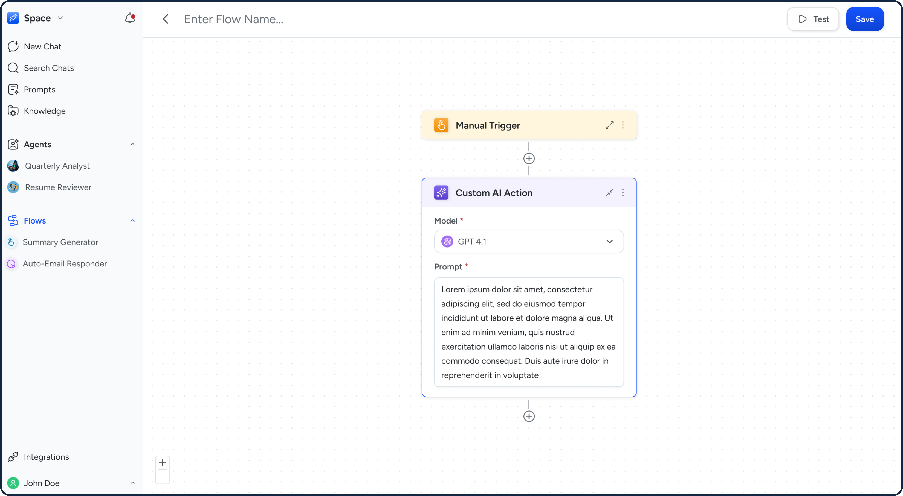
AI flows let users automate their work by connecting different applications with natural language instructions.
Deterministic Flows
AI-powered flows — where AI interpreted natural language instructions at runtime — introduced hallucinations, misinterpretations, and hours of debugging. We rebuilt them with deterministic logic: user-defined, predictable, and reliable.
While deterministic flows ensured reliability, the user experience of building those flows was lacking. We recognised the need to enable AI-assisted flow creation so users wouldn't have to bear the burden of learning how to build them themselves.
Core Value
User defines the exact logic — no AI interpretation at runtime
Predictable execution — flows do exactly what was designed, every time
Client trust built on reliability — not just capability
Easy to debug — transparent logic means problems are findable and fixable
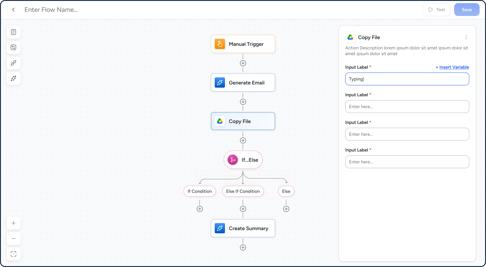
Instead of relying on prompts that could be misinterpreted, flows now use structured configurations to improve reliability. Variables can also be used to reference outputs from previous actions, enabling more consistent and connected workflows.
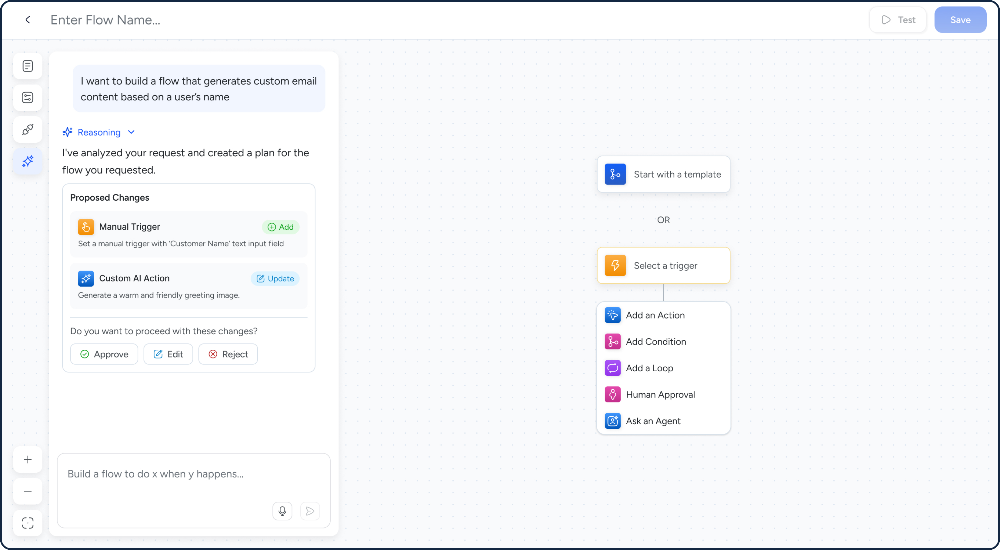
Because deterministic flows can be difficult for the average user to build, an AI-assisted approach was introduced. Users can simply describe what they want in natural language, and the AI will plan, confirm, and build the flow for them.
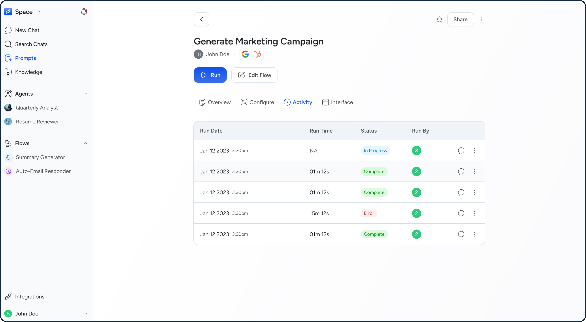
Flow activity is captured so users can view run history and track execution over time. They can also chat with their flow activity, using past runs as context to ask questions and get more informed answers.
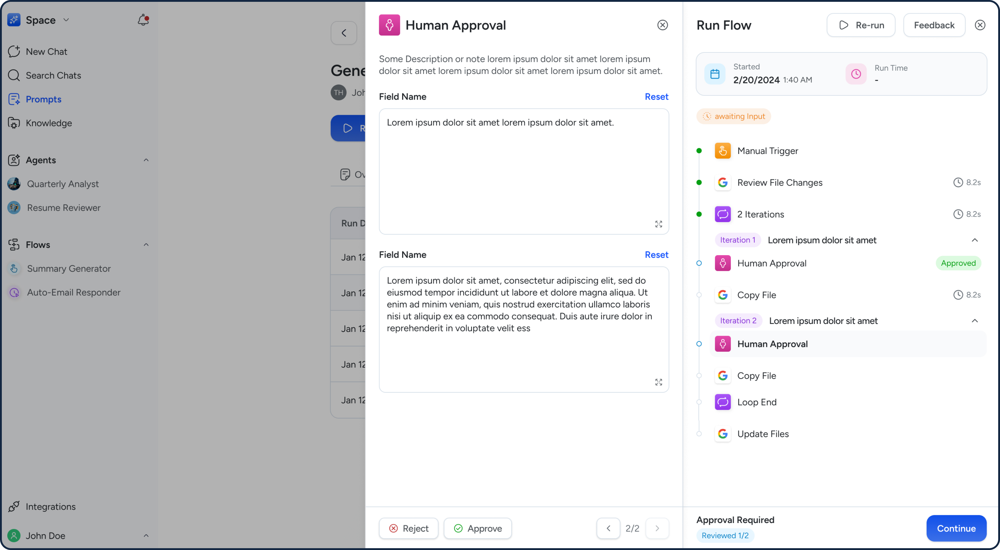
Certain key actions require human approval before proceeding. Within flows, users can review and edit the content before approving, ensuring greater control and accuracy.
What We Delivered
After two years of rapid iteration, the platform had grown from an idea and initial wireframes into a live, multi-sector AI productivity tool with happy users reporting real, measurable time saved.
3+ Sectors Onboarded
The platform expanded beyond its initial small-business focus to serve clients across multiple industries — each engagement broadening the platform's capabilities rather than fragmenting them.
Hours Saved for End Users
Users across sectors reported meaningful, measurable time savings as a direct result of using Rolai — validation that the platform was solving real problems, not just demonstrating AI novelty.